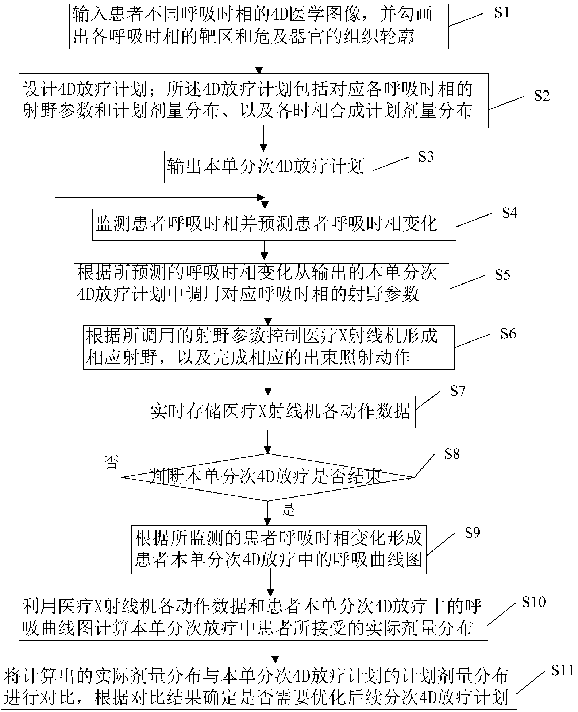

发明名称--一种带有呼吸补偿的4D放疗计划的实施方法及其设备
| 申请号 | CN201410544788.2 | 申请日 | 2014.10.15 | ||
| 公开（公告）号 | CN104225809A | 公开（公告）日 | 2014.12.24 | ||
| IPC分类号 | A61N5/10 | 申请（专利权）人 | 大连现代医疗设备科技有限公司; | ||
| 发明人 | 罗宁;张爱萍;韩军;卿珍;薛辰全;尹亚男;于静恩;侯大伟;吴飞;韩杰; | 优先权号 |
摘要:
本发明公开了一种带有呼吸补偿的4D放疗计划的实施方法及其设备，所述实施方法包括如下步骤：输入患者不同呼吸时相的4D医学图像，勾画出各呼吸时相的靶区和危及器官的组织轮廓；设计4D放疗计划；监测患者呼吸时相并预测患者呼吸时相变化；调用对应呼吸时相的射野参数；控制医疗X射线机形成相应射野，以及完成相应的出束照射动作；判断本单分次4D放疗是否结束，是则形成患者本单分次4D放疗中的呼吸曲线图；计算本单分次放疗中患者所接受的实际剂量分布；将计算出的实际剂量分布与本单分次4D放疗计划的计划剂量分布进行对比，根据对比结果确定是否需要优化后续分次4D放疗计划。本发明能够达到精确四维放疗的目标。
摘要附图:
